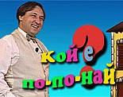
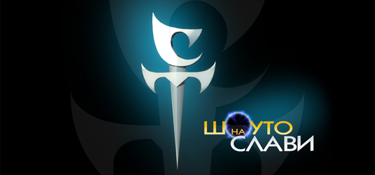
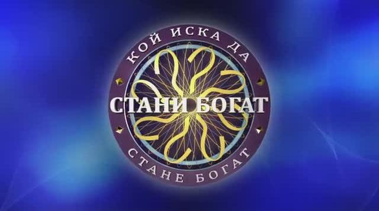
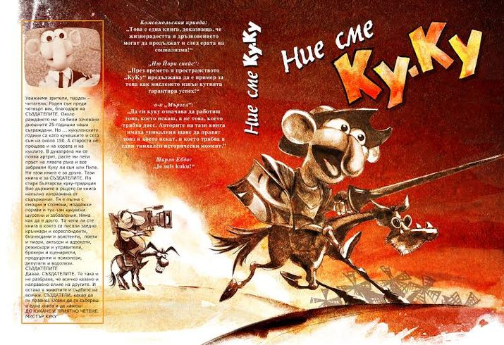
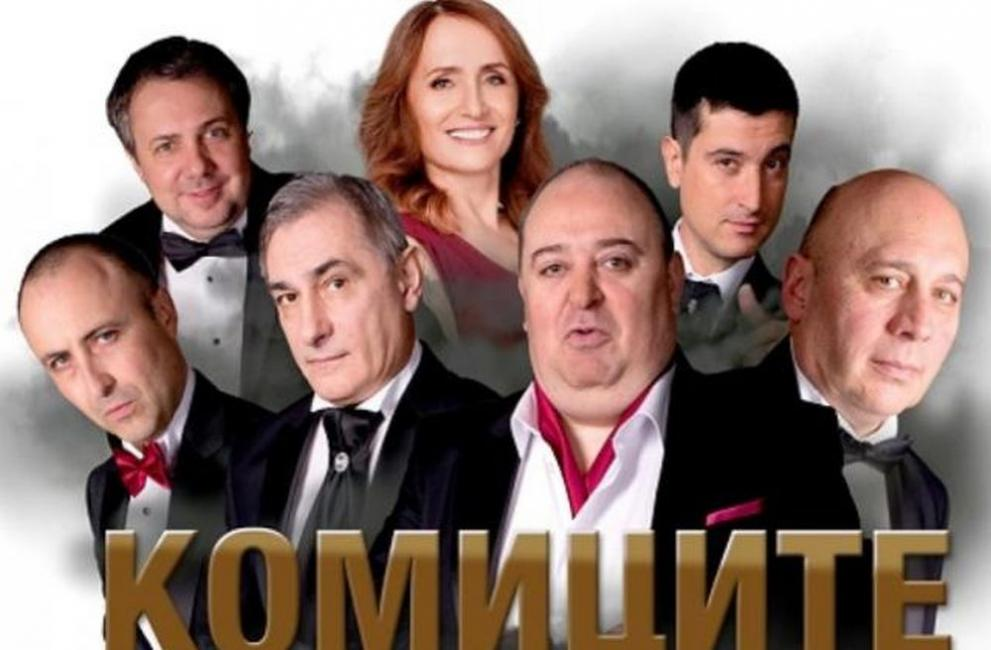

|  | Предаването стартира 2000 г. по бТВ, където се задържа цели 13 години. През 2014 се мести в ТВ7, но след като телевизията фалира, предаването си отива с нея. Шоуто дава възможност да изявяват своята артистичност деца между 2 и 7 годинки. Екипът на предаването основа през 2008-ма година и Детска градина за артистични деца "По-по-най" в квартал Драгалевци, София. |
|  | Предаването започва да се излъчва на 27 ноември 2000 г. Първоначално не попада в праймтайма на телевизията, но след година продукцията успява да разшири най-гледането време до 23:30 ч. В периода до 2004 г. то привлича средно между 2 и 3 милиона зрители всяка вечер.Последното предаване на „Шоуто на Слави“ e на 31 юли 2019 г. Компанията му на Слави Трифонов сама е отказала да поднови договора си с bTV Media Group и в последното излъчване на предаването той обявява, че „от дълго време не се чувстват част от медийната среда“. |
|  | „Стани богат“ се излъчва по Нова телевизия с водещ Ники Кънчев в периода 2001 – 2008 г. От 7 януари 2008 г., за този нов сезон предаването се снима в ново студио и с нови декори. Последното издание се излъчва през 2014 г. След 4-годишна пауза шоуто се завръща през 2018 г. в ефира на БНТ 1, като се излъчва от 1 април в 19:00 часа и завършва на 14 юни 2019 г. всеки делничен ден с водещ Михаил Билалов. От есента на 2019 г. се излъчва всяка събота и неделя от 19:00 ч. и приключва на 26 януари 2020 г. |
|  | Студентската програма „Ку-ку“ е сатирично предаване на БНТ, излъчвано по Канал 1 от 27 януари 1990 г. до 17 октомври 1994 г. През 1991 г. „Ку-ку“ нашумява особено с т.нар. си „Козлодуйско предаване", с което имитира авария в АЕЦ „Козлодуй“ – предаването цели да покаже колко неподготвено е обществото и институциите за подобна авария, но ефектът е хиляди изплашени зрители, което коства на екипа съдебен процес. През 1995 г. Ку-Ку се трансформира в „Каналето“ |
|  | Предаването се излъчва от 26 януари 2007 г., от сряда до петък от 22:00, като се снима в Дом на Културата „Искър“. В края на 2007 г. актьорският екип на Комиците се увеличава и Комиците се местят в Зала Люмиер в НДК. На 30 септември 2016 г. предаването е преименувано на „Комиците и приятели“. На 26 януари 2019 година „Комиците и приятели“ отпразнуват 12-годишния си рожден ден. Последното предаване е излъчено на 31 декември 2019 г. |